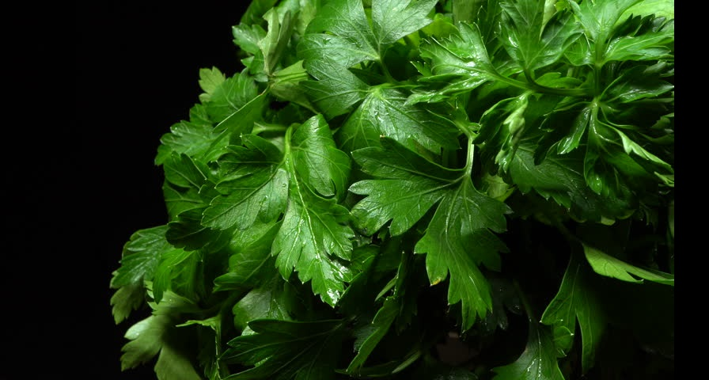

Cilantro

- Cilantro refers to the leaves of the coriander plant.
- It is commonly eaten as a food or used as a spice. Cilantro can also be used as a medicine.
- Cilantro is taken by mouth for cancer and to remove poisonous metals such as mercury, lead, or aluminum from the body.
- It is also taken by mouth for measles, toothache, and as an antioxidant.
- In foods, cilantro is used as a flavoring agent.
- Cilantro might help remove metals such as mercury, lead, and aluminum from the body.
- Removing these metals from the body might help some antibiotics and antiviral medicines work better.
- Cilantro might also help eliminate certain bacteria that cause infections.
- Cilantro is LIKELY SAFE when taken by mouth in food amounts. However, some people might experience food allergies after eating cilantro.
- There is one report of hives, facial swelling, and throat swelling in a man who ate cilantro.
- Cilantro might slow blood clotting. There is a concern that it might increase the risk of bleeding during and after surgery when eaten in large amounts.
- Not enough is known about the use of cilantro during pregnancy and breast-feeding. Stay on the safe side and avoid using more than food amounts.